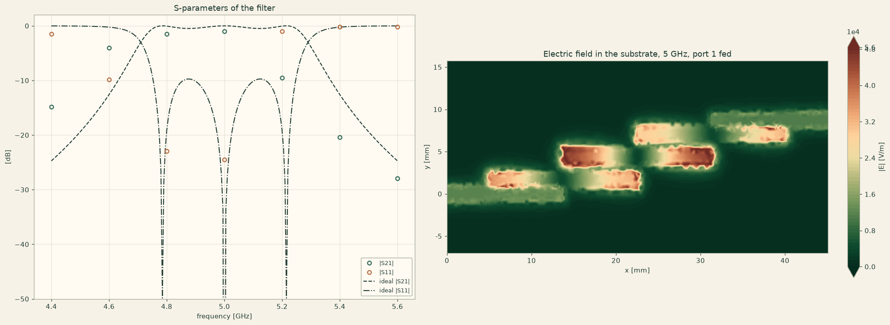

Docs › Examples › Microstrip coupled-line bandpass filter
Microwave circuits · 3D
Microstrip coupled-line bandpass filter
A third-order, 0.5 dB equal-ripple bandpass filter of four edge-coupled microstrip sections, designed for 5 GHz with 10 % bandwidth.
Run locally with OneSimulation. The example downloads are free. Running them requires an activated runtime. The current pilot runs on macOS on Apple Silicon with CPython 3.13. Installation and activation · View pilot plans. Scope of the reference checks.

What it computes
OneSimulation solves the full Maxwell equation in substrate and air with second-order Nédélec elements; the five pieces of copper are perfect-conductor sheets between mesh regions, the feed lines end in TEM ports computed from the electrostatic potential of their cross-sections, and one factorization per frequency gives the S-parameters in 50 ohm against the coupled-line circuit theory of the design. The script that builds the STEP files (with the even- and odd-mode synthesis of the sections) comes with the notebook.
What it checks
Transmission -1.0 dB and reflection -24.5 dB at 5 GHz; the computed passband (|S21| above -3 dB between the sweep points 4.8 and 5.0 GHz, interpolated about 4.64 to 5.07 GHz) lies about 3 % below and is somewhat narrower than the ideal 4.71-5.29 GHz of the design, as expected from the approximate coupled-line synthesis; 20 % of the power is radiated at the open ends at 5 GHz; reciprocity to 3e-14.
Geometry
The notebook starts at the import of the CAD files coupled_line_bandpass_filter.step, coupled_line_bandpass_filter_copper_0.step, coupled_line_bandpass_filter_copper_1.step, coupled_line_bandpass_filter_copper_2.step, coupled_line_bandpass_filter_copper_3.step, coupled_line_bandpass_filter_copper_4.step, coupled_line_bandpass_filter_substrate.step: STEP (AP242), readable by any CAD program, with the names of the faces that the boundary conditions use. Put them next to the notebook.
The geometry script
The script coupled_line_bandpass_filter_geometry.py builds the geometry with the CAD objects of OneSimulation and writes the files. Change a dimension there, run it, and run the notebook again.
"""Geometry of the OneSimulation example "Microstrip coupled-line bandpass filter".
Builds with the CAD objects of OneSimulation a third-order, 0.5 dB equal-ripple coupled-line bandpass
filter for 5 GHz with 10 % bandwidth (Pozar, Microwave Engineering, §8.8) on a 0.813 mm substrate of
relative permittivity 3.55. The even- and odd-mode impedances of the four quarter-wave coupled
sections follow from the prototype values; the widths and gaps are found from the coupled
microstrip formulas of Garg and Bahl, the section lengths from the mean of the even- and odd-mode
effective permittivities, shortened by the open-end extension of Hammerstad. 50-ohm lines of 5 mm lead from the ends to the two sides of a box of air
5 mm high. Seven STEP files: coupled_line_bandpass_filter.step (faces port_1, port_2, ground below,
open for the lid and the long sides), coupled_line_bandpass_filter_substrate.step and
coupled_line_bandpass_filter_copper_0.step ... _4.step (thin layers of air in the shape of the five
pieces of copper: the input line with the first quarter wave, the three half-wave resonators and the
output line with the last quarter wave; their faces on the substrate are the copper).
"""
import numpy as np
from onesim.cad.d3 import Box
from scipy.optimize import brentq, fsolve
from scipy.special import ellipk
height, permittivity, frequency, bandwidth, lid, feed, layer = (
0.813e-3,
3.55,
5e9,
0.10,
5e-3,
5e-3,
0.4e-3,
)
eps0, light, z0 = 8.8541878128e-12, 299792458.0, 50.0
prototype = (1.5963, 1.0967, 1.5963, 1.0)
def single(width, er):
"""Hammerstad-Jensen characteristic impedance and effective permittivity of a microstrip."""
u = width / height
a = (
1
+ np.log((u**4 + (u / 52) ** 2) / (u**4 + 0.432)) / 49
+ np.log(1 + (u / 18.1) ** 3) / 18.7
)
b = 0.564 * ((er - 0.9) / (er + 3)) ** 0.053
effective = (er + 1) / 2 + (er - 1) / 2 * (1 + 10 / u) ** (-a * b)
f = 6 + (2 * np.pi - 6) * np.exp(-((30.666 / u) ** 0.7528))
return (
376.730313668
/ (2 * np.pi)
* np.log(f / u + np.sqrt(1 + 4 / u**2))
/ np.sqrt(effective),
effective,
)
def capacitances(width, gap, er):
"""Even- and odd-mode capacitances per length of coupled microstrips (Garg and Bahl 1979)."""
impedance, effective = single(width, er)
plate = eps0 * er * width / height
fringe = 0.5 * (np.sqrt(effective) / (light * impedance) - plate)
a = np.exp(-0.1 * np.exp(2.33 - 2.53 * width / height))
inner = (
fringe
/ (1 + a * height / gap * np.tanh(8 * gap / height))
* np.sqrt(er / effective)
)
k = (gap / height) / (gap / height + 2 * width / height)
air = eps0 * ellipk(1 - k**2) / ellipk(k**2)
dielectric = eps0 * er / np.pi * np.log(
1 / np.tanh(np.pi * gap / (4 * height))
) + 0.65 * fringe * (0.02 * np.sqrt(er) / (gap / height) + 1 - er**-2)
return plate + fringe + inner, plate + fringe + air + dielectric
def modes(width, gap):
"""Even and odd impedances and effective permittivities."""
even, odd = capacitances(width, gap, permittivity)
even0, odd0 = capacitances(width, gap, 1.0)
return (
1 / (light * np.sqrt(even * even0)),
1 / (light * np.sqrt(odd * odd0)),
even / even0,
odd / odd0,
)
inverters = [np.sqrt(np.pi * bandwidth / (2 * prototype[0]))]
inverters += [
np.pi * bandwidth / (2 * np.sqrt(prototype[n - 1] * prototype[n])) for n in (1, 2)
]
inverters += [np.sqrt(np.pi * bandwidth / (2 * prototype[2] * prototype[3]))]
sections = []
for j in inverters:
target = (z0 * (1 + j + j**2), z0 * (1 - j + j**2))
width, gap = np.exp(
fsolve(
lambda v: np.array(modes(*np.exp(v))[:2]) - target, np.log([1.5e-3, 0.3e-3])
)
)
_, _, even, odd = modes(width, gap)
effective = single(width, permittivity)[1]
extension = (
0.412
* height
* (effective + 0.3)
* (width / height + 0.264)
/ ((effective - 0.258) * (width / height + 0.8))
)
sections.append(
(
width,
gap,
light / frequency / np.sqrt((even + odd) / 2) / 4 - extension,
target,
)
)
line = brentq(lambda w: single(w, permittivity)[0] - z0, 0.05 * height, 20 * height)
strip = lambda x, y, dx, dy: Box(
length=dx, width=dy, height=layer, origin=(x, y, height)
)
# Along x the four sections follow each other; the upper line of one section and the lower line of the
# next form one half-wave resonator on a common centre line. Every separate piece of copper is a
# region of its own.
pieces, x, y = [strip(0.0, -line / 2, feed + 1e-4, line)], feed, 0.0
for width, gap, length, _ in sections:
pieces[-1] = pieces[-1] | strip(x, y - width / 2, length, width)
pieces.append(strip(x, y + gap + width / 2, length, width))
x, y = x + length, y + gap + width
pieces[-1] = pieces[-1] | strip(x - 1e-4, y - line / 2, feed + 1e-4, line)
low, high = -7e-3, y + 7e-3
box = Box(length=x + feed, width=high - low, height=lid, origin=(0.0, low, 0.0))
faces = box.boundaries
box.grouped(
port_1=faces.x_min,
port_2=faces.x_max,
ground=faces.z_min,
open=faces.z_max | faces.y_min | faces.y_max,
).save("coupled_line_bandpass_filter.step")
Box(length=x + feed, width=high - low, height=height, origin=(0.0, low, 0.0)).save(
"coupled_line_bandpass_filter_substrate.step"
)
for index, piece in enumerate(pieces):
piece.save(f"coupled_line_bandpass_filter_copper_{index}.step")
print(f"50-ohm line {line * 1e3:.3f} mm")
for n, (width, gap, length, (even, odd)) in enumerate(sections, start=1):
print(
f"section {n}: Z0e {even:.2f} ohm, Z0o {odd:.2f} ohm -> width {width * 1e3:.3f} mm, gap {gap * 1e3:.3f} mm, length {length * 1e3:.3f} mm"
)The notebook
The complete notebook, cell by cell. Run it to produce the figures and the comparison printout.
Cascaded coupled lines, each pair a quarter wavelength long at the centre frequency, form a bandpass filter: the upper line of one section and the lower line of the next make a half-wave resonator, and the coupling across each gap sets the bandwidth. Here a third-order filter with 0.5 dB equal ripple and 10 % bandwidth at 5 GHz is etched on a 0.813 mm substrate of relative permittivity 3.55. The even- and odd-mode impedances of the sections follow from the prototype; their widths and gaps come from the coupled microstrip formulas of Garg and Bahl, and each quarter wave is shortened by the open-end extension of the microstrip (Hammerstad), the fringing field beyond the open end of every resonator.
OneSimulation solves the time-harmonic Maxwell equation
with second-order Nédélec elements. Each piece of copper is a sheet without thickness: the face between the substrate and a thin layer of air shaped like the piece (region_interface). The feed lines end in TEMPorts that compute their quasi-TEM mode from the electrostatic potential of the cross-section; scattering_matrix gives the S-parameters in 50 Ω from one factorization per frequency.
| faces | condition | |---|---| | port_1, port_2 | TEM port, signal conductor: the copper | | ground, copper | perfect electric conductor | | open (lid and long sides) | impedance boundary \(Y_0=\sqrt{\varepsilon_0/\mu_0}\) |
Reference (D. M. Pozar, Microwave Engineering, 4th ed., Wiley 2012, §8.8; M. K. Krishna Garg, I. J. Bahl, IEEE Trans. MTT 27 (1979) 700). With the prototype values \(g_1=g_3=1.5963\), \(g_2=1.0967\) and the fractional bandwidth \(\Delta\), the inverters are \(Z_0J_1=\sqrt{\pi\Delta/2g_1}\), \(Z_0J_n=\pi\Delta/(2\sqrt{g_{n-1}g_n})\), \(Z_0J_4=\sqrt{\pi\Delta/2g_3}\) and the section impedances \(Z_{0e,o}=Z_0(1\pm JZ_0+(JZ_0)^2)\). A coupled-line section with two open ends has \(Z_{11}=-\tfrac{\mathrm j}{2}(Z_{0e}+Z_{0o})\cot\theta\) and \(Z_{21}=-\tfrac{\mathrm j}{2}(Z_{0e}-Z_{0o})\csc\theta\), \(\theta=\tfrac\pi2 f/f_0\); the cascade of the four sections is the ideal filter: passband 4.75-5.25 GHz with 0.5 dB ripple.
import numpy as np
from onesim.cad.d2 import Plane
from onesim.cad.exchange import load
from onesim.materials import VACUUM_PERMEABILITY, VACUUM_PERMITTIVITY
from onesim.materials.electromagnetic import (
IsotropicElectromagneticMaterial,
RegionwiseElectromagneticMaterial,
)
from onesim.meshing import LocalRefinement, TetrahedralMesher, region_interface
from onesim.numerics import Numerics
from onesim.numerics.fem import FiniteElement, Nedelec
from onesim.numerics.linear import ComplexSparseDirect
from onesim.physics.electromagnetics import (
FrequencyDomainMaxwell,
ImpedanceBoundary,
PerfectElectricConductor,
TEMPort,
port_values,
scattering_matrix,
)
from onesim.simulation import Problem, Simulation
from onesim.visualization import plots, theme
theme.set()
eta0 = np.sqrt(VACUUM_PERMEABILITY / VACUUM_PERMITTIVITY)
f0, bandwidth, height, prototype = 5e9, 0.10, 0.813e-3, (1.5963, 1.0967, 1.5963, 1.0)Geometry and mesh
load reads the box of air, the substrate and the five pieces of copper (input line with the first quarter wave, three resonators, output line with the last quarter wave); each becomes a region of one mesh. Second-order tetrahedra of 0.6 mm follow the copper, 1.4 mm the substrate and 5 mm the air.
box = load("coupled_line_bandpass_filter.step")
substrate = load("coupled_line_bandpass_filter_substrate.step").named("substrate")
pieces = [
load(f"coupled_line_bandpass_filter_copper_{k}.step").named(f"copper_{k}")
for k in range(5)
]
faces = box.boundaries
mesh = TetrahedralMesher(
target_size=5e-3,
embedded_regions=(substrate, *pieces),
refinements=(
*(LocalRefinement(region=piece, target_size=0.6e-3) for piece in pieces),
LocalRefinement(region=substrate, target_size=1.4e-3),
),
).generate(box)
copper = region_interface(mesh, pieces[0], substrate)
for piece in pieces[1:]:
copper = copper | region_interface(mesh, piece, substrate)
view = plots.Camera(elevation=50, azimuth=-70)
fig = plots.figure(1, 2, size=(14, 6))
plots.geometry(
[substrate, *pieces],
labels=False,
camera=view,
length_unit="mm",
title="Substrate and copper (STEP)",
ax=fig[0],
)
plots.mesh(
mesh,
groups=("all",),
legend=False,
camera=view,
length_unit="mm",
title=f"{mesh.cell_count} quadratic tetrahedra",
ax=fig[1],
)
plots.show()Model
simulation builds the filter at one frequency; the sweep runs from 4.4 to 5.6 GHz.
material = RegionwiseElectromagneticMaterial(
{"substrate": IsotropicElectromagneticMaterial(relative_permittivity=3.55)},
default=IsotropicElectromagneticMaterial(),
)
simulation = lambda f, fed=False: (
Simulation(
problem=Problem(
name="Coupled-line bandpass filter",
geometry=box,
physics=(
m := FrequencyDomainMaxwell(
domain=box.volume,
frequency=f,
material=material,
phasor_convention="exp(-i*omega*t)",
amplitude_convention="peak",
),
),
boundary_conditions=(
TEMPort(
physics=m,
boundary=faces.port_1,
signal=copper,
incident_power=float(fed),
),
TEMPort(physics=m, boundary=faces.port_2, signal=copper),
PerfectElectricConductor(physics=m, boundary=faces.ground | copper),
ImpedanceBoundary(physics=m, boundary=faces.open, admittance=1 / eta0),
),
),
mesh=mesh,
numerics=Numerics(
spatial=FiniteElement(element=Nedelec(order=2)),
linear_solver=ComplexSparseDirect(),
),
),
m,
)
frequencies = np.round(np.linspace(4.4e9, 5.6e9, 7), -6)
sweep = {
f: scattering_matrix(*simulation(f), reference_impedance=50.0) for f in frequencies
}
def ideal(f):
inverters = (
[np.sqrt(np.pi * bandwidth / (2 * prototype[0]))]
+ [
np.pi * bandwidth / (2 * np.sqrt(prototype[n - 1] * prototype[n]))
for n in (1, 2)
]
+ [np.sqrt(np.pi * bandwidth / (2 * prototype[2] * prototype[3]))]
)
theta, chain = np.pi / 2 * f / f0, np.eye(2, dtype=complex)
for j in inverters:
even, odd = 50 * (1 + j + j**2), 50 * (1 - j + j**2)
z11, z21 = -0.5j * (even + odd) / np.tan(theta), -0.5j * (even - odd) / np.sin(
theta
)
chain = chain @ np.array(
[[z11 / z21, (z11**2 - z21**2) / z21], [1 / z21, z11 / z21]]
)
(a, b), (c, d) = chain
return abs((a + b / 50 - c * 50 - d) / (a + b / 50 + c * 50 + d)), abs(
2 / (a + b / 50 + c * 50 + d)
)Results
The characteristic impedance of the feed lines, the S-parameters over the band against the ideal coupled-line filter, the centre and the bandwidth of the computed passband, and reciprocity.
result, m = (lambda run: (run[0].solve_stationary(), run[1]))(simulation(f0, fed=True))
dB = lambda x: 20 * np.log10(max(abs(x), 1e-6))
print(
"feed lines (TEM ports): Z0 = "
+ ", ".join(
f"{v['characteristic_impedance'].real:.2f}" for v in port_values(result, m)
)
+ " ohm"
)
print("f [GHz] |S21| [dB] |S11| [dB] ideal |S21| [dB] ideal |S11| [dB]")
for f, S in sweep.items():
print(
f"{f / 1e9:6.2f} {dB(S[1, 0]):12.2f} {dB(S[0, 0]):12.2f} {dB(ideal(f)[1]):18.2f} {dB(ideal(f)[0]):18.2f}"
)
passing = [f for f, S in sweep.items() if dB(S[1, 0]) > -3.0]
print(
f"computed -3 dB passband of the sweep: {min(passing) / 1e9:.2f} to {max(passing) / 1e9:.2f} GHz (ideal filter -3 dB: "
f"{min(f for f in np.linspace(4.4e9, 5.6e9, 1201) if dB(ideal(f)[1]) > -3) / 1e9:.3f} to "
f"{max(f for f in np.linspace(4.4e9, 5.6e9, 1201) if dB(ideal(f)[1]) > -3) / 1e9:.3f} GHz)"
)
print(
f"largest transmission {max(dB(S[1, 0]) for S in sweep.values()):.2f} dB; reciprocity max |S12 - S21| "
f"{max(abs(S[0, 1] - S[1, 0]) for S in sweep.values()):.1e}; power lost by radiation at {f0 / 1e9:.1f} GHz "
f"{1 - abs(sweep[f0][0, 0]) ** 2 - abs(sweep[f0][1, 0]) ** 2:.3f}"
)The computed passband lies a few percent below the design band and is somewhat narrower: the coupled microstrip formulas used for the design are accurate to a few percent in the even- and odd-mode impedances, and the open ends and the steps between the sections are only approximated by the open-end extension. Part of the power leaves through the open top of the box (the filter radiates at its open ends), which the ideal circuit does not know.
Figure
Left: transmission and reflection over the band against the ideal filter. Right: the electric field in the substrate at 5 GHz with port 1 fed: the resonators carry standing waves and pass the signal from gap to gap.
fine = np.linspace(4.4e9, 5.6e9, 241)
fig = plots.figure(1, 2, size=(18, 6.5))
plots.line(
points={
"|S21|": (frequencies / 1e9, [dB(S[1, 0]) for S in sweep.values()]),
"|S11|": (frequencies / 1e9, [dB(S[0, 0]) for S in sweep.values()]),
},
reference={
"ideal |S21|": (fine / 1e9, [dB(ideal(f)[1]) for f in fine]),
"ideal |S11|": (fine / 1e9, [dB(ideal(f)[0]) for f in fine]),
},
xlabel="frequency [GHz]",
ylabel="[dB]",
ylimits=(-50, 2),
title="S-parameters of the filter",
legend="lower right",
ax=fig[0],
)
plots.section(
result.field(m.electric_field),
plane=Plane(origin=(0.0, 0.0, 0.6 * height), normal=(0.0, 0.0, 1.0)),
component=lambda E, p: np.linalg.norm(np.abs(E), axis=1),
limits="robust",
subdivisions=1,
length_unit="mm",
label="|E| [V/m]",
title="Electric field in the substrate, 5 GHz, port 1 fed",
ax=fig[1],
)
plots.show()Going further
Change the bandwidth or the order in coupled_line_bandpass_filter_geometry.py (prototype values of Pozar, Table 8.4); narrower gaps give stronger coupling and a wider band.